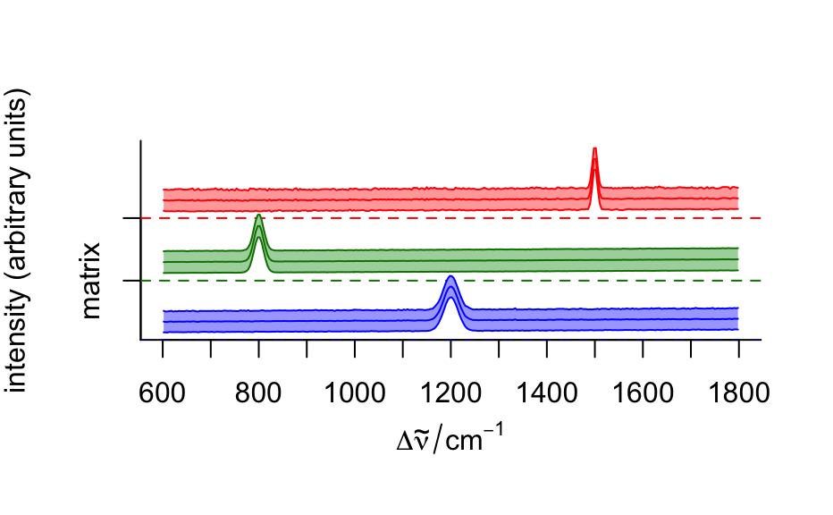
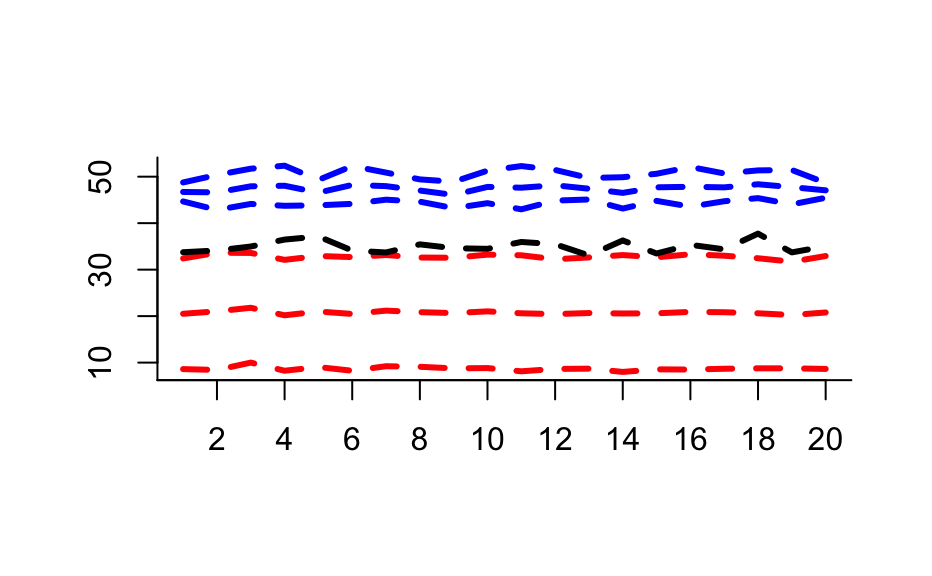

Compute summary statistics for subsets of a hyperSpec object.
# S4 method for hyperSpec aggregate( x, by = stop("by is needed"), FUN = stop("FUN is needed."), ..., out.rows = NULL, append.rows = NULL, by.isindex = FALSE )
| x | a |
|---|---|
| by | grouping for the rows of Either a list containing an index vector for each of the subgroups or a
vector that can be |
| FUN | function to compute the summary statistics |
| ... | further arguments passed to |
| out.rows | number of rows in the resulting |
| append.rows | If more rows are needed, how many should be appended? Defaults to 100 or an estimate based on the percentage of groups that are still to be done, whatever is larger. |
| by.isindex | If a list is given in |
A hyperSpec object with an additional column
@data$.aggregate tracing which group the rows belong to.
aggregate applies FUN to each of the subgroups given by
by. It combines the functionality of aggregate,
tapply, and ave for hyperSpec
objects.
aggregate avoids splitting x@data.
FUN does not need to return exactly one value. The number of
returned values needs to be the same for all wavelengths (otherwise the
result could not be a matrix), see the examples.
If the initially preallocated data.frame turns out to be too small,
more rows are appended and a warning is issued.
C. Beleites
cluster.means <- aggregate (chondro, chondro$clusters, mean_pm_sd) plot(cluster.means, stacked = ".aggregate", fill = ".aggregate", col = matlab.dark.palette (3))## make some "spectra" spc <- new ("hyperSpec", spc = sweep (matrix (rnorm (10*20), ncol = 20), 1, (1:10)*5, "+")) ## 3 groups color <- c("red", "blue", "black") by <- as.factor (c (1, 1, 1, 1, 1, 1, 5, 1, 2, 2)) by#> [1] 1 1 1 1 1 1 5 1 2 2 #> Levels: 1 2 5## Example 1: plot the mean of the groups plot (aggregate (spc, by, mean), "spc", col = color, add = TRUE, lines.args = list(lwd = 3, lty = 2))## Example 2: FUN may return more than one value (here: 3) plot (aggregate (spc, by, mean_pm_sd), "spc", col = rep(color, each = 3), lines.args = list(lwd = 3, lty = 2))## Example 3: aggregate even takes FUN that return different numbers of ## values for different groups plot (spc, "spc", col = color[by])weird.function <- function (x){ if (length (x) == 1) x + 1 : 10 else if (length (x) == 2) NULL else x [1] } agg <- aggregate (spc, by, weird.function)#> Warning: At3of3levels: Output data.frame too small. Consider using anappropriate value for out.rows to speed up calculations.agg$.aggregate#> [1] 1 5 5 5 5 5 5 5 5 5 5 #> Levels: 1 2 5